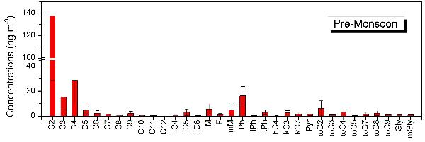
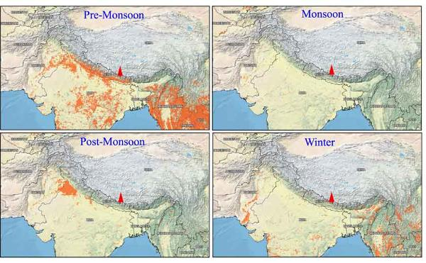

The Tibetan Plateau that used to be considered one of the
cleanest regions on earth is experiencing environmental pollutions in recent years. Where do those
pollutants come from remains an important science question. Even though people are well aware of the
fact that high levels of carbonaceous aerosol exist over South Asia, the area adjacent to the Himalayas
and Tibetan Plateau, yet little is known about if they can be transported across the Himalayas, and
reach as far inland as the Tibetan Plateau.
Nature recently highlighted a finding by CETES researcher
Dr. CONG Zhiyuan and his colleagues based on years of in situ monitoring and lab analysis. According to
their discovery, south Asian atmospheric pollutants can cross the Himalayas to enter Tibetan Plateau,
especially during the pre-monsoon season.

To quantitatively evaluate the effect of carbonaceous
aerosols on the south edge of the Tibetan Plateau, ITP researchers conducted weekly aerosol sampling at
Qomolangma (Mt. Everest) Station for Atmospheric and Environmental Observation and Research (QOMS,
28.36° N, 86.95° E, 4276 m a.s.l.) from August 2009 to July 2010. They further measured organic carbon,
elemental carbon, dicarboxylic acids and related compounds in the aerosol samples. Strong positive
correlations were observed for dicarboxylic acids with biomass burning tracers, levoglucosan and
K+, demonstrating that this area was evidently affected by biomass burning. The seasonal
variation pattern of dicarboxylic acids is consistent with OC and EC, being characterized by a
pronounced maximum in the pre-monsoon season. Molecular distributions of dicarboxylic acids and related
compounds (malonic acid/succinic acid, maleic acid/fumaric acid) further support this finding. These
features are similar to the seasonal trends of aerosol composition reported previously from the southern
slope of the Himalayas, such as Langtang and NCO-P. By means of satellite observations (CALIOP and
MODIS), they thus suggest that the local meteorological conditions and regional atmospheric flow process
could facilitate the penetration of the carbonaceous aerosols from South Asia throughout the
Himalayas.

With the consideration of the darkening force of
carbonaceous aerosols, they believe that this finding has important implication for this
climate-sensitive area, where the glacier melting supplies water for billions of people
downstream.
If you are interested in these studies, please click on the
following links:
http://www.atmos-chem-phys.net/15/1573/2015/acp-15-1573-2015.html
http://www.nature.com/srep/2015/150330/srep09580/full/srep09580.html
http://www.nature.com/news/pollutants-waft-over-the-himalayas-1.17312